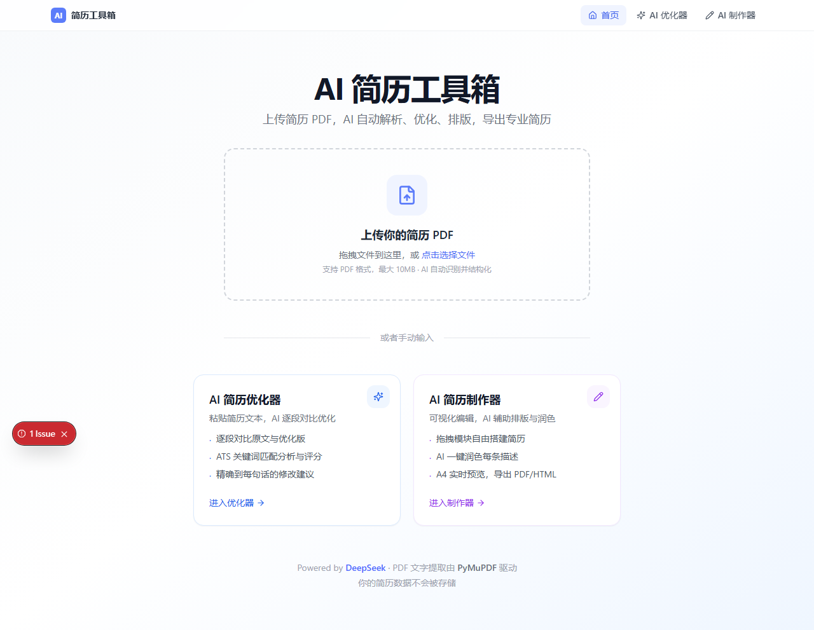
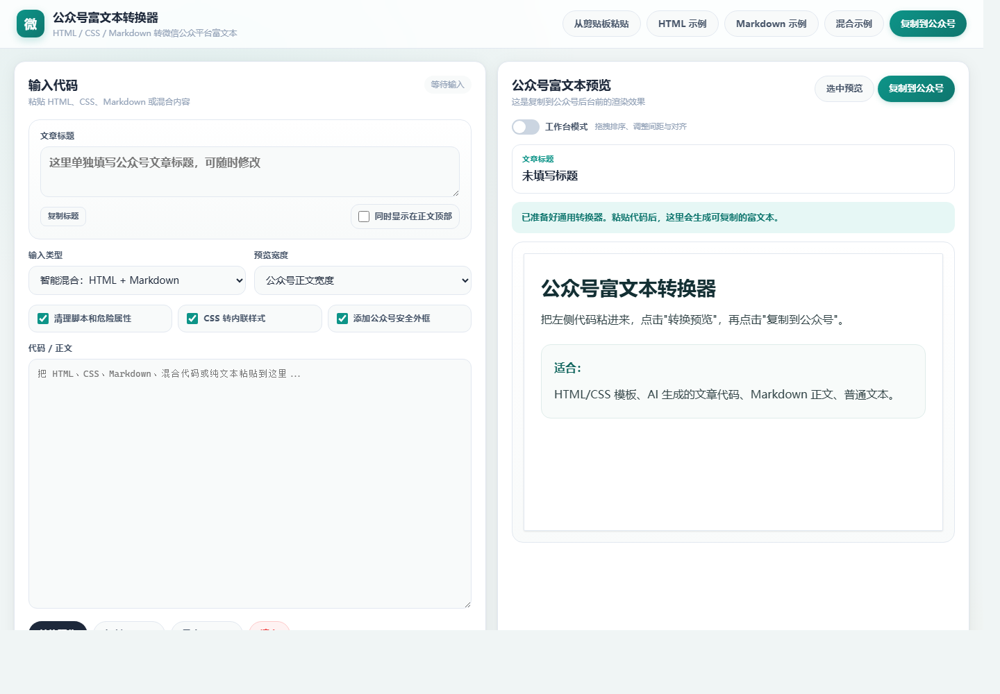

从内容生产的真实需求出发，把前端交互、模型调用、文件处理和线上部署组织成可使用的 AI 工具。
AI tools built for practical publishing and video workflow scenarios.
这一页作为作品集的第四个板块，和文字、设计、视频作品并列展示。重点不只是页面效果，而是把 AI 能力放进上传、识别、生成、裁剪、排版、发布这些连续流程里。

这是一套面向求职场景的 AI 简历工具，分为两个核心模块：优化器上传简历后逐段对比 AI 优化建议，制作器提供逐字段 AI 润色、智能排版适配和 PDF 服务端渲染导出。

这是一个面向公众号运营场景的发布辅助工具。它把内容编辑、样式预览和富文本转换集中在一个轻量页面中，让文章从草稿更快进入可复制、可发布的状态。
这组三条竖屏样本来自我在深圳凯迪仕智能科技公司实习期间参与制作的 AI 视频内容。项目围绕智能门锁的海外家庭使用场景展开，用更接近日常短视频的方式切入产品卖点，把“门口突发状况”“屋主开门”“双手提物”等生活片段转化为可传播的开场画面。
制作流程 / Production Workflow
AI 作品页的作用，是把“能做页面”进一步展示为“能把模型、内容流程和真实部署串起来”。
AI